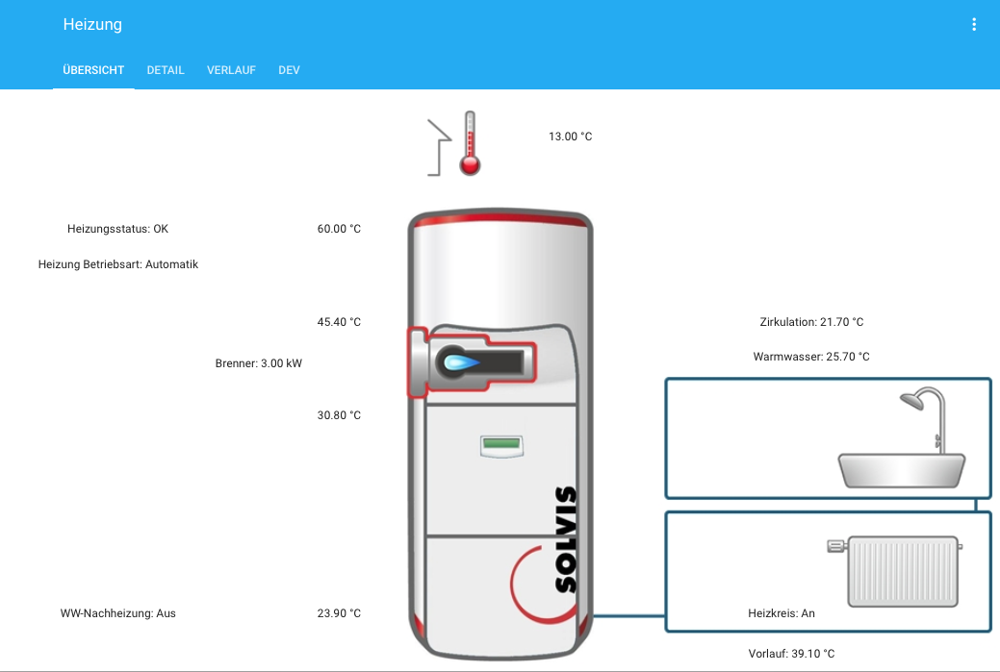
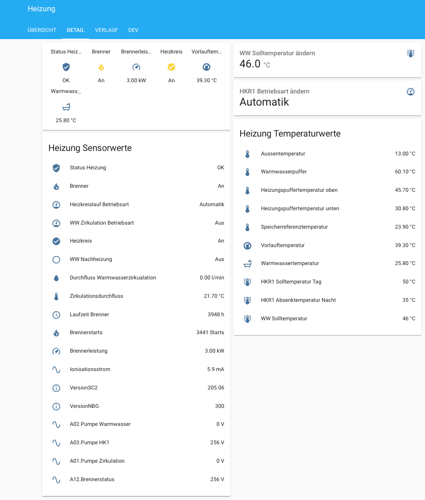
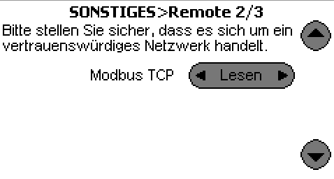
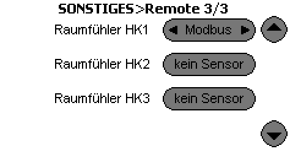
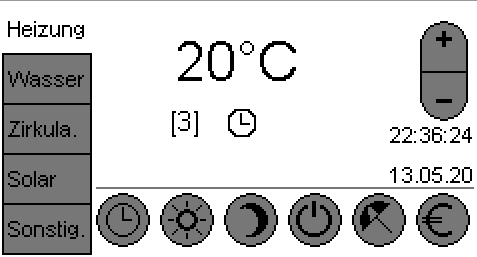
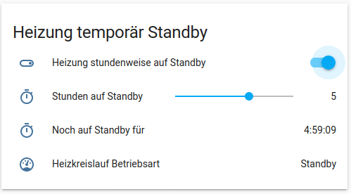

Solvis Heizung via Modbus auslesen und steuern¶
Eine Solvis Heizungsanlage, hier SolvisMax, lässt sich mit Hilfe der optional erhältlichen Solvis Remote fernsteuern. Die Solvis Remote bildet im Prinzip das Touchdisplay der Heizung 1:1 via Browser nach. Zusätzlich gibt es Graphen über den Temperaturverlauf der einzelnen Sensoren des Schichtenspeichers und die Möglichkeit, sich ein Anlagenschema darzustellen.
Für eine Integration ein ein bestehendes Smart Home System, hier Home Assistant, bietet die Solvis Remote zusätzlich die Möglichkeit die Heizung mittels Modbus-TCP Protokoll lokal auslesen und, falls gewünscht, auch steuern zu können.
Vorbildlich ist die Bereitstellung aller Dokumentationen inkl. Modbus Register von Solvis auf deren Webseite.
benötigte Hardware¶
- Solvis Heizung, hier SolvisMax 7
- Solvis Control 2 (SC2)
- Solvis Remote zur Anbindung ans Netzwerk und Bereitstellung des Modbus-TCP Protokolls
Home Assistant Übersicht¶
In Home Assistant wurde die Ansicht der Anlage auf der Solvis Remote nachgebildet 
Zusätzlich gibt es eine Detail-Ansicht der einzelnen Sensoren und Stati. 
Klick auf die einzelnen Sensoren bringen die Historie des Sensors bzw. die Auswahlmöglichkeiten zur Steuerung, z.b. den HKR1-Betriebsmodus zu ändern


Langzeitauswertung mit Grafana/InfluxDB¶
Für Langzeitstatistiken werden die Daten von Home Assistant in einer InfluxDB Datenbank gespeichert und mittels Grafana visualisiert.

Für die monatliche Auswertung der Brennerstarts und Laufzeit des Brenners werden mit folgenden Queries die Daten ermittelt:
1 2 3 | |
Aktivierung Modbus Protokoll¶
Zur Aktivierung von Modbus TCP muss in das Installateurmenü gewechselt werden. Den zugehörigen Code werde ich nicht veröffentlichen. Bitte mit dem Installateur der Heizung Kontakt aufnehmen.
Im Menüpunkt Sonstiges --> Remote auswählen und dort dann den Modus für Modbus TCP auf lesen oder auch senden (schreiben) einstellen.
Sollten die Einstellungen korrekt sein sollte unter der IP-Addresse der Solvis-Remote auf Port TCP/502 ein Connect möglich sein.


Auszug configuration.yaml¶
Nachfolgend ein Auszug der configuration.yaml von Home Assistant mit den wichtigsten Sensoren und Templates
1 2 3 4 5 6 7 8 9 10 11 12 13 14 15 16 17 18 19 20 21 22 23 24 25 26 27 28 29 30 31 32 33 34 35 36 37 38 39 40 41 42 43 44 45 46 47 48 49 50 51 52 53 54 55 56 57 58 59 60 61 62 63 64 65 66 67 68 69 70 71 72 73 74 75 76 77 78 79 80 81 82 83 84 85 86 87 88 89 90 91 92 93 94 95 96 97 98 99 100 101 102 103 104 105 106 107 108 109 110 111 112 113 114 115 116 117 118 119 120 121 122 123 124 125 126 127 128 129 130 131 132 133 134 135 136 137 138 139 140 141 142 143 144 145 146 147 148 149 150 151 152 153 154 155 156 157 158 159 160 161 162 163 164 165 166 167 168 169 170 171 172 173 174 175 176 177 178 179 180 181 182 183 184 185 186 187 188 189 190 191 192 193 194 195 196 197 198 199 200 201 202 203 204 205 206 207 208 209 210 211 212 213 214 215 216 217 218 219 220 221 222 223 224 225 226 227 228 229 230 231 232 233 234 235 236 237 238 239 240 241 242 243 244 245 246 247 248 249 | |
Raumtemperatur per Modbus-Register statt Raumbedienelement¶
Normalerweise wird über das (optionale) Raumbedienelement die Raumtemperatur an die Solvis Control2 (SC2) gemeldet. Dadurch kann die Heizung die Regelung an die erreichte Raumtemperatur anpassen.
Da im Haus keine einfache Verkabelung des Raumbedienelements möglich war, es aber ein Modbus Register 34304 (Raumtemperatur 1) gibt, war die Idee geboren die Raumtemperatur über die in Home Assistant vorhandenen Zigbee Temperatursensoren per Modbus in das Register zu schreiben, was zunächst fehlschlug, trotz aktiviertem schreibenden Modbus-Zugriff. Allerdings war zu dem Zeitpunkt die SC2 noch nicht für ein Raumbedienelement eingerichtet.
Nach Kontaktaufnahme mit Solvis bekam ich die Infos dir mir fehlten. Vielen Dank hierfür an Wolf Walter
Voraussetzungen¶
- Solvis Control muss mit Raumbedienelement für den Heizkreislauf konfiguriert sein (auch wenn kein Raumbedienelement per Kabel angeschlossen wird)
- dafür ist ein Zurücksetzen der Solvis Control auf Werkseinstellung nötig, da in der Initialisierung das Raumbedienelement zum Heizkreislauf zugeordnet wird
- Anschließend muss im Installateur-Menü unter
Sonstiges --> Remote --> Seite 3 --> Raumfühler HK1aufModbusumgestellt werden  - und der Modbus-Modus muss auf
sendenwas dem schreibenden Zugriff entspricht umgestellt werden, falls noch nicht geschehen
Hinweis
Die Temperatur muss ca. alle 60 Sekunden per Modbus in das Register geschrieben werden, sonst "verschwindet" die Temperatur in der Anzeige und zeigt nur noch "--"
zyklisches setzen der Raumtemperatur in Home Assistant¶
Eine Automatisierung schreibt den Sensorwert eines Zigbee Temperatursensors alle 30 Sekunden in das Modbus Register.
Dazu muss der Wert des Sensors konvertiert werden, da das Modbus-Register den Wert in 0.1°C skaliert erwartet. Zudem muss der Wert in ein int gewandelt werden da der modbus.write_register-Service ein int erwartet.
Automatisierung¶
1 2 3 4 5 6 7 8 9 10 11 | |
Raumtemperaturanzeige in der SC2¶
Bei erfolgreichem setzen der Temperatur erscheint diese in der Solvis Control 

Stundenweises umschalten von Automatik auf Standby-Betrieb¶
Gerade in der Übergangszeit kann es vorkommen, dass an sonnigen Tagen trotz noch kühler Außentemperatur es in den Zimmern durch die Sonneneinstrahlung bereits warm ist. Die Heizung aber noch wegen der kühlen Außentemperatur weiterhin läuft bis auch die Außentemperatur entsprechend später am Tag steigt.
Hier wäre ein Nutzungsszenario für folgende Automatisierung: Schalte den Heizkreis auf Standby-Modus für x-Stunden (z.B. bis Abends).

Realisiert ist dies über einen timer in Home-Assistant, dessen Zeitwert (Stunden) per input_number gesetzt wird (Schieberegler im Frontend). Über ein input_boolean (Ein-/Ausschalter im Frontend) wird dann eine Automatisierung ausgeführt, die den Timer startet (service: timer.start) und das Modbus Register 2818 auf den Wert 5 (HKR1 Standbymodus) schreibt.
Wenn der Timer abgelaufen ist, startet eine zweite Automatisierung (getriggert durch event_type: timer.finished) die dann den Ein-/Ausschalter wieder auf "Aus" setzt.
Durch das setzen des Ein-Ausschalters auf "Aus" durch diese Automatisierung wird wiederum eine weitere Automatisierung getriggert die dann zum Einen das Modbus-Register 2818 wieder auf 2 (Automatik) setzt, also den Heizkreis wieder in den normalen Automatikmodus versetzt. Der zweite Anwendungsfall ist das manuelle Umschalten des Ein-/Ausschalters in der Weboberfläche auf "Aus" um wieder manuell auf "Automatik" umzuschalten. Auch hier triggert diese Automatisierung.
Konfiguration Home-Assistant¶
1 2 3 4 5 6 7 8 9 10 11 12 13 14 15 16 17 18 19 20 21 22 23 24 25 26 27 28 29 30 31 32 33 34 35 36 37 38 39 40 41 42 43 44 45 46 47 48 49 50 51 52 53 54 55 56 57 58 59 60 61 62 63 64 65 66 67 68 | |